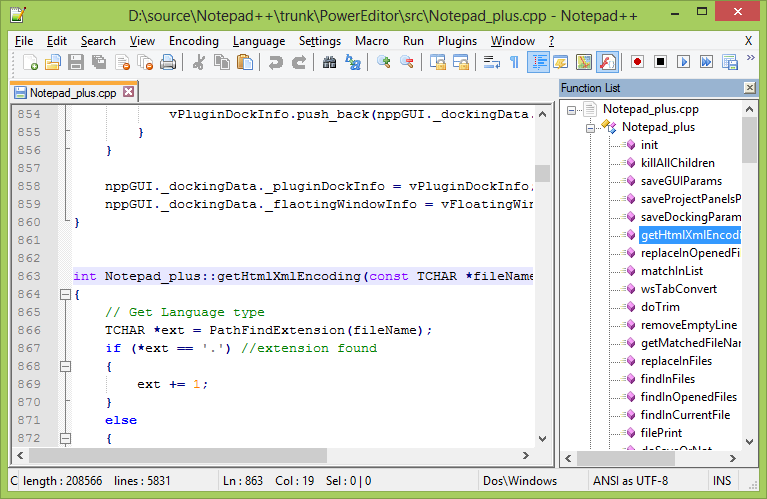

Notepad++ est un éditeur de texte générique qui est écrit en C++ (d'où son nom) par Don Ho, un informaticien basé à Paris diplômé de l'Université Paris VII - Diderot en 2000. Particulièrement performant, cet éditeur est distribué gratuitement sous licence GPL.
Notepad++ est un éditeur de source avec mise en relief de la syntaxe et mise en forme de cette dernière. Ce logiciel vous permet également de colorer les mots définis par l'utilisateur. Vous pouvez ainsi imprimer votre code source en couleur.
Notepad++ est un éditeur de code source qui prend en charge plusieurs langages de programmation sous l’environnement Windows. C’est aussi un remplacement léger du Bloc-notes.

En optimisant autant de routines que possible sans perdre la convivialité, Notepad++ tente de réduire les émissions mondiales de dioxyde de carbone. Lorsque vous utilisez moins de puissance du processeur, le PC peut réduire sa consommation d’énergie et la consommation d’énergie, ce qui se traduit par un environnement plus vert.
Vous pouvez glisser et visionner un document d'une vue à une autre.